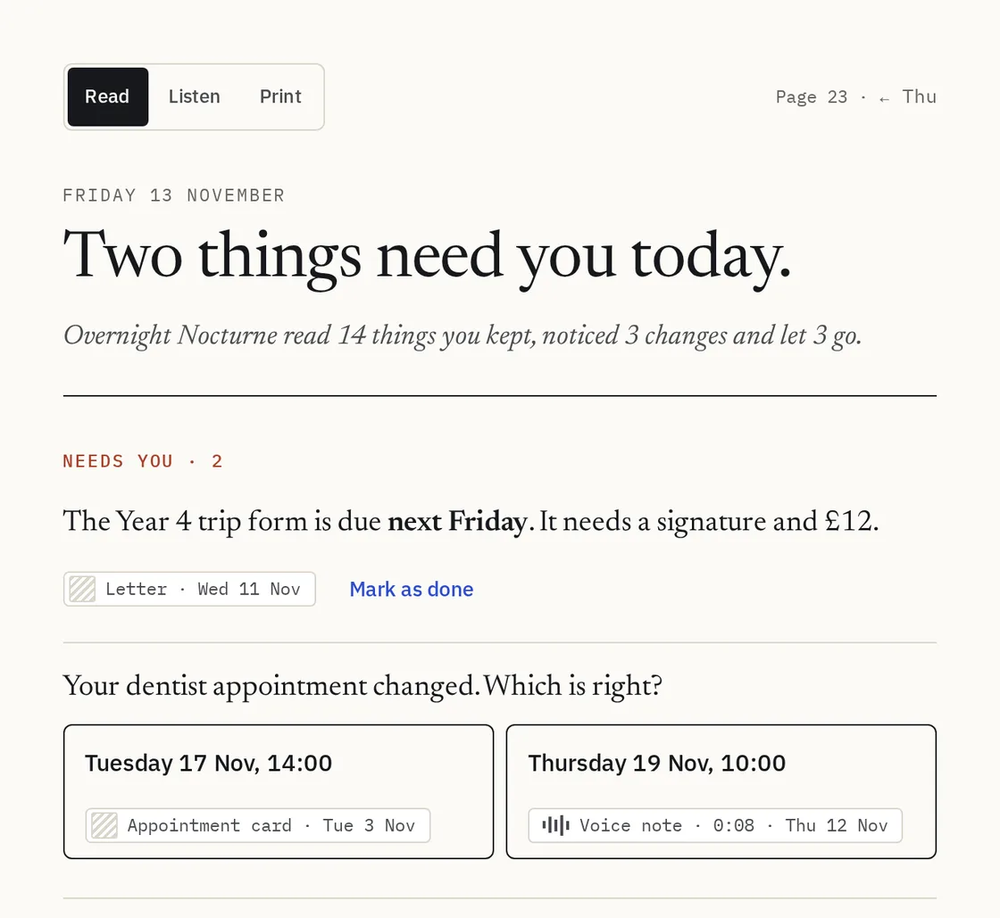

Nocturne
It sleeps on it.
You wake to one page.
A household’s letters, calls and messages, on one page each morning.
Free and open sourcenocturne.is
A household’s letters, calls and messages, on one page each morning.
Free and open sourcenocturne.is
